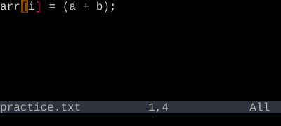
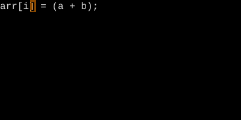
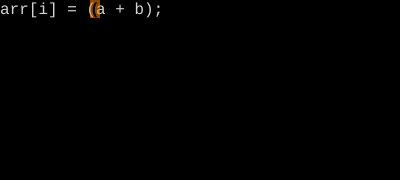

Match Bracket
% — jump to the matching paren, brace, or bracket.
% jumps from one bracket to its mate. The cursor needs to be on a bracket (or before one on the line). It's also a motion, so d% deletes a paired block.
Cursor on (? Press %. You're on the matching ). Press it again — back. % works for (), [], {}, and (with plugins) tag pairs and language constructs.
| Key | Note |
|---|---|
| % |
| Key | Note |
|---|---|
| d | |
| % |
| Key | Note |
|---|---|
| v | |
| % |
Reference
| Key | Action |
|---|---|
| % | Jump to matching bracket |
| d% | Delete from here to match (inclusive) |
| y% | Yank to match |
| c% | Change to match |
Worked example — % on different brackets
% picks the right pair automatically.



See also: Bracket Text Objects, Percentage and Column Jumps